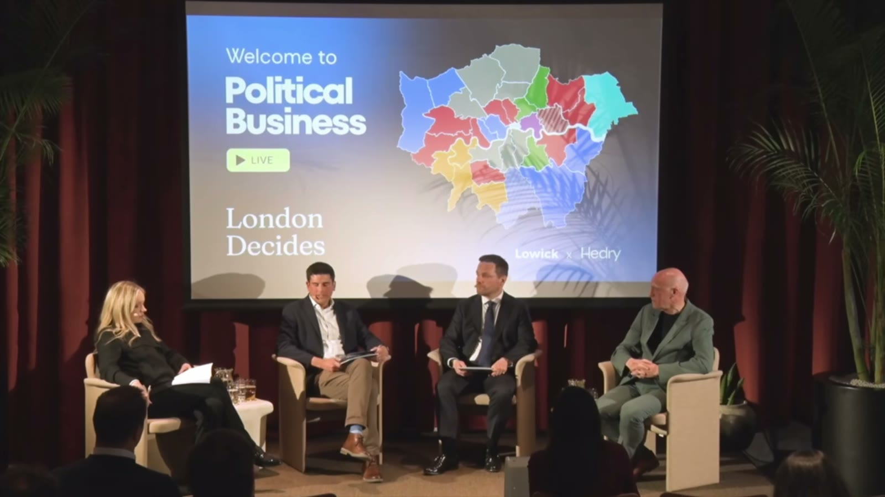
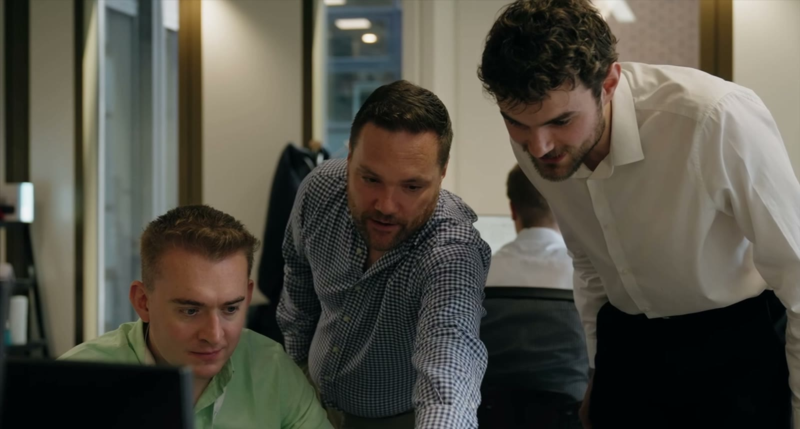
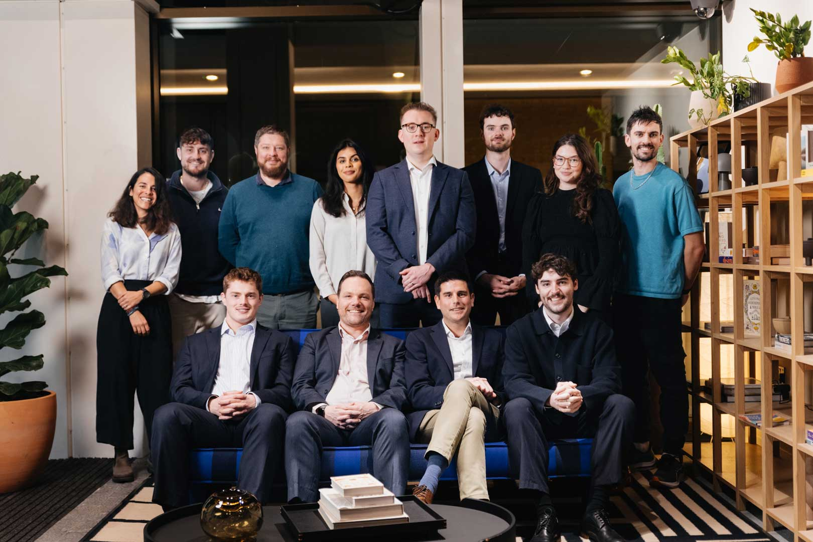

London after the election: five signals for business
What the capital's new political map means for planning, investment and reputation — and the decisions leaders should prepare for now.
Read the analysisNews & insights
Perspectives on the policy, politics and public conversations shaping decisions — plus the latest from Lowick Hedry.

What the capital's new political map means for planning, investment and reputation — and the decisions leaders should prepare for now.
Read the analysisA practical reading of the shifting relationship between Whitehall, mayors and local government.

Two senior appointments deepen our planning, infrastructure and stakeholder expertise.
Developers, borough leaders and policy experts discuss what it will take to unlock delivery.

Five principles for decision-makers operating in politically exposed environments.
Growing our regional network and senior advisory offer across the East of England.
Our team maps the pressure points across growth, housing, infrastructure and investment.
No stories in this category yet.